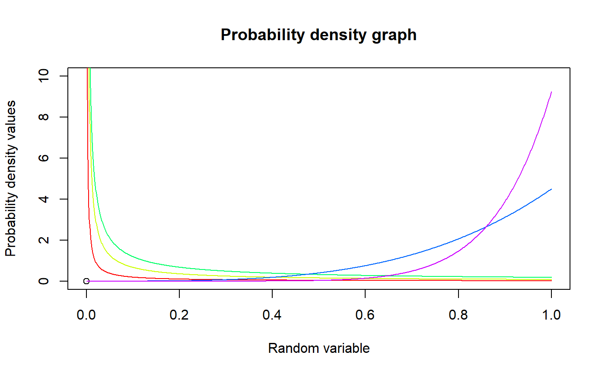

These functions provide the ability for generating probability density values, cumulative probability density values and moment about zero values for the Generalized Beta Type-1 Distribution bounded between [0,1].
pGBeta1(p,a,b,c)
| p | vector of probabilities. |
|---|---|
| a | single value for shape parameter alpha representing as a. |
| b | single value for shape parameter beta representing as b. |
| c | single value for shape parameter gamma representing as c. |
The output pGBeta1 gives the cumulative density values in vector form.
The probability density function and cumulative density function of a unit bounded Generalized Beta Type-1 Distribution with random variable P are given by
$$g_{P}(p)= \frac{c}{B(a,b)} p^{ac-1} (1-p^c)^{b-1} $$; \(0 \le p \le 1\) $$G_{P}(p)= \frac{p^{ac}}{aB(a,b)} 2F1(a,1-b;p^c;a+1) $$ \(0 \le p \le 1\) $$a,b,c > 0$$
The mean and the variance are denoted by $$E[P]= \frac{B(a+b,\frac{1}{c})}{B(a,\frac{1}{c})} $$ $$var[P]= \frac{B(a+b,\frac{2}{c})}{B(a,\frac{2}{c})}-(\frac{B(a+b,\frac{1}{c})}{B(a,\frac{1}{c})})^2 $$
The moments about zero is denoted as $$E[P^r]= \frac{B(a+b,\frac{r}{c})}{B(a,\frac{r}{c})} $$ \(r = 1,2,3,....\)
Defined as \(B(a,b)\) is Beta function. Defined as \(2F1(a,b;c;d)\) is Gaussian Hypergeometric function.
NOTE : If input parameters are not in given domain conditions necessary error messages will be provided to go further.
Manoj, C., Wijekoon, P. & Yapa, R.D., 2013. The McDonald Generalized Beta-Binomial Distribution: A New Binomial Mixture Distribution and Simulation Based Comparison with Its Nested Distributions in Handling Overdispersion. International Journal of Statistics and Probability, 2(2), pp.24-41.
Available at: http://www.ccsenet.org/journal/index.php/ijsp/article/view/23491.
Janiffer, N.M., Islam, A. & Luke, O., 2014. Estimating Equations for Estimation of Mcdonald Generalized Beta - Binomial Parameters. , (October), pp.702-709.
Roozegar, R., Tahmasebi, S. & Jafari, A.A., 2015. The McDonald Gompertz Distribution: Properties and Applications. Communications in Statistics - Simulation and Computation, (May), pp.0-0.
Available at: http://www.tandfonline.com/doi/full/10.1080/03610918.2015.1088024.
#plotting the random variables and probability values col<-rainbow(5) a<-c(.1,.2,.3,1.5,2.15) plot(0,0,main="Probability density graph",xlab="Random variable",ylab="Probability density values", xlim = c(0,1),ylim = c(0,10))for (i in 1:5) { lines(seq(0,1,by=0.001),dGBeta1(seq(0,1,by=0.001),a[i],1,2*a[i])$pdf,col = col[i]) }#> [1] 0.000000 0.117612 0.230496 0.338724 0.442368 0.541500 0.636192 0.726516 #> [9] 0.812544 0.894348 0.972000 1.045572 1.115136 1.180764 1.242528 1.300500 #> [17] 1.354752 1.405356 1.452384 1.495908 1.536000 1.572732 1.606176 1.636404 #> [25] 1.663488 1.687500 1.708512 1.726596 1.741824 1.754268 1.764000 1.771092 #> [33] 1.775616 1.777644 1.777248 1.774500 1.769472 1.762236 1.752864 1.741428 #> [41] 1.728000 1.712652 1.695456 1.676484 1.655808 1.633500 1.609632 1.584276 #> [49] 1.557504 1.529388 1.500000 1.469412 1.437696 1.404924 1.371168 1.336500 #> [57] 1.300992 1.264716 1.227744 1.190148 1.152000 1.113372 1.074336 1.034964 #> [65] 0.995328 0.955500 0.915552 0.875556 0.835584 0.795708 0.756000 0.716532 #> [73] 0.677376 0.638604 0.600288 0.562500 0.525312 0.488796 0.453024 0.418068 #> [81] 0.384000 0.350892 0.318816 0.287844 0.258048 0.229500 0.202272 0.176436 #> [89] 0.152064 0.129228 0.108000 0.088452 0.070656 0.054684 0.040608 0.028500 #> [97] 0.018432 0.010476 0.004704 0.001188 0.000000#> [1] 0.4#> [1] 0.04pGBeta1(0.04,2,3,4) #acquiring the cdf values for a=2,b=3,c=4#> [1] 0.0006451179#> [1] 0.7619048#> [1] 0.01950113#only the integer value of moments is taken here because moments cannot be decimal mazGBeta1(3.2,3,2,2)#> [1] 0.4848485